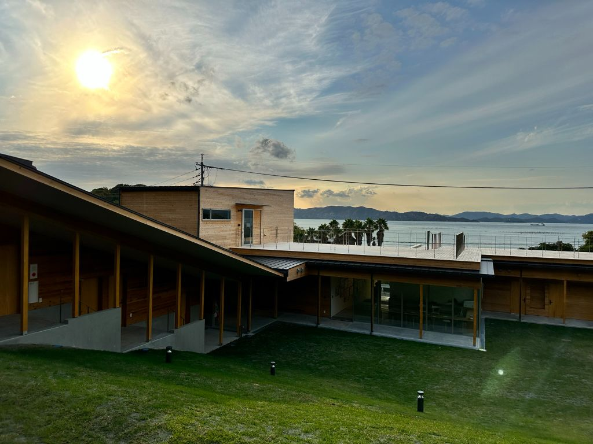
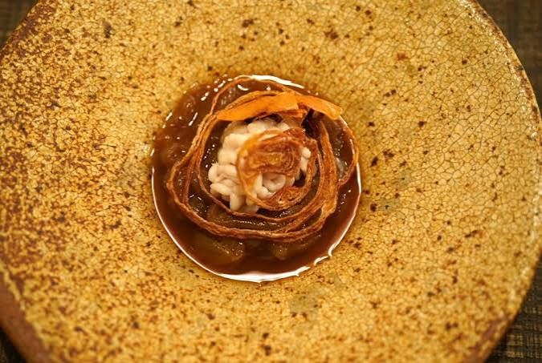
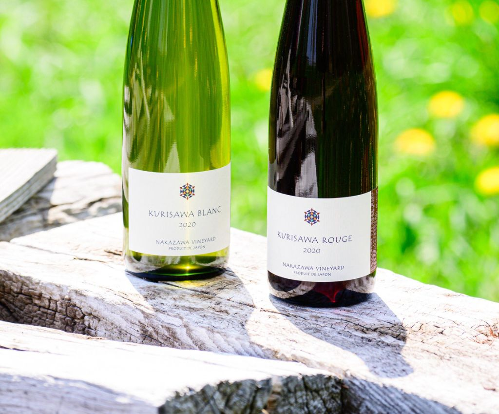
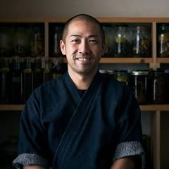
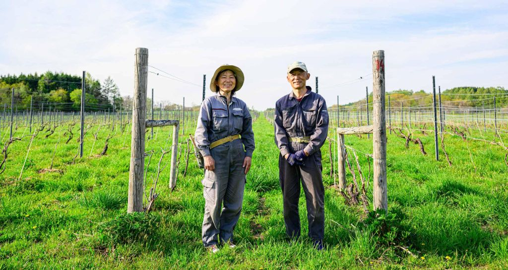
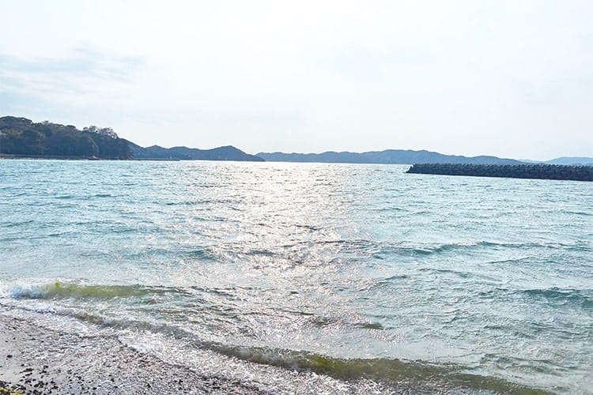

これからの地方の「豊かさ」を考える。
瀬戸内海を望む豊島エスポワールパークに、北海道から二人の作り手が旅をしてきます。
イタリアンレストラン〈SAGRA〉の 村井啓人シェフ が、この日のためだけに腕をふるうフルコース。
岩見沢の畑から届く、ナカザワヴィンヤード の自然派ワインとのペアリング。
豊島の夏の光の中で、
「北」の風土と「南」の海が、静かに響き合う午後を。
余市の海と畑を映してきた村井シェフの一皿一皿に、
岩見沢の風が育てたナカザワヴィンヤードのワインが寄り添う。
フルコース × ペアリングによる、静かで、深い午後の食卓。


※ 写真はイメージです。当日のコース内容は、季節と仕入れにより村井シェフにお任せいただきます。
北海道・北広島から〈SAGRA〉の村井啓人シェフ。
岩見沢からナカザワヴィンヤードのご夫妻。
いずれも土地の空気を、皿と一杯に映しつづける作り手たちです。

1976年札幌生まれ。実家は和食店で、幼い頃から料理人を志す。札幌のイタリア料理店を経て27歳で渡伊し、1年をかけてイタリア各地で研鑽。2006年〈札幌SAGRA〉開業、2017年に余市へ移転。2026年、北広島に移して再オープン。北海道の食材とワインで客をもてなす、日本を代表するイタリアンレストラン〈SAGRA〉のオーナーシェフ。
sagra.jp →
北海道岩見沢市栗沢町。中澤一行・由紀子ご夫妻が「畑で決まる」味わいを追いつづける、日本を代表するナチュラルワインの造り手。代表銘柄〈KURISAWA BLANC / ROUGE〉は、単一畑と自然な醸造から、北の風土を静かに映す一杯として、国内外に熱心なファンをもつ。
nakazawavineyard.jp →
江戸から明治にかけて、大阪から瀬戸内、山口、能登を経て、北海道・小樽まで至った交易路 「北前船」。米や塩、そして昆布やニシンが行き交い、島と北の港はひとつの経済圏でした。
時を経て、二つの海が、
もう一度ひとつの食卓に出会う。
その航路をなぞるように、豊島の食卓で、北海道の作り手をお迎えします。